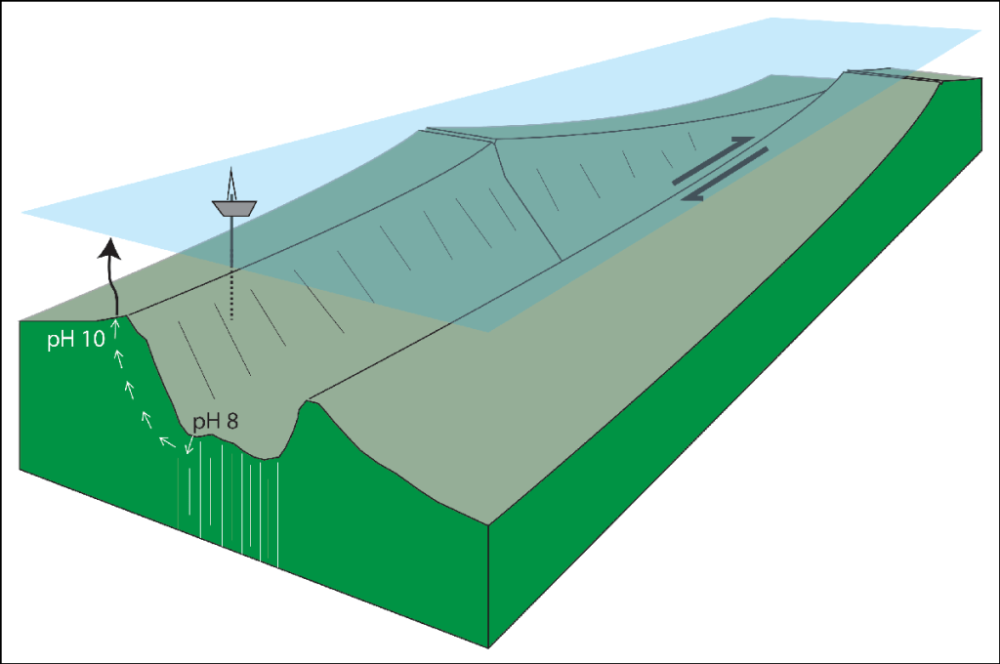

16 OAE -Ocean Alkalinity Enhancement
16.1 Tranform Faults
Reusch
Ocean alkalinity enhancement (OAE), in which the addition of ions like Mg2+ and Ca2+ (sourced from materials such as olivine or lime) to the ocean drives more dissolution of atmospheric CO2 to form bicarbonate (HCO3–), holds considerable promise, because the ocean’s capacity for storing bicarbonate is ample on the relevant time frame.
Indeed, OAE approaches—often involving materials dispersed at the ocean surface—are being studied, though they, too, face questions about their large-scale feasibility.
Are there other marine settings where OAE could be pursued on a broad scale and with durable results?
Transform Faults Offer a Transformative Approach
Earth’s mantle, constituting more than 80% of the planet’s volume, is a vast reservoir of ultramafic (low-silica) rock. In concept, a small fraction of this rock—minimally about 600 cubic kilometers if completely converted to carbonate—could neutralize the entire slug of Industrial Age fossil carbon in the atmosphere.
Oceanic transform faults and their fracture zone extensions present tectonic settings where such reactive mantle rocks, which are typically buried under kilometers of crust, are exposed at Earth’s surface. The discovery of transform faults—which connect the divergent plate boundaries located at mid-ocean spreading centers—was key to unleashing the plate tectonic revolution in the 1960s. And today, the co-occurrence of the right rocks and high-relief bathymetry presents an optimal combination of chemical and gravitational disequilibria, suggesting a potential for large-scale CDR found nowhere else on Earth (Figure 1).

Figure: Oceanic transform faults and their fracture zone extensions (vertical white lines) may be settings where a natural carbon dioxide removal (CDR) process could be enhanced. In these settings, seawater (pH ~ 8) infiltrates fractured rock below the seafloor, where it can react with rock (e.g., peridotite), releasing thermal and mechanical energy and creating alkaline hydrothermal fluids (pH ~ 10) that buoyantly rise (small white arrows) and precipitate mineral carbonate when they mix with seawater back at the seafloor. The drilling ship shown on the ocean surface suggests how this process might be enhanced by creating additional fractures around the fault to drive more hydrothermal circulation. The resulting hydrothermal fluids might be piped (black vertical arrow) to the surface ocean mixed layer where they counter ocean acidification and remove carbon dioxide from the atmosphere. The approximate width, length, and height of this block diagram are 100, 400, and 10 kilometers, respectively, with 5:1 vertical exaggeration.
Especially at magma-poor slow spreading (<4 centimeters per year) plate boundaries, transform fault settings feature relatively fast reacting magnesium silicate minerals in abundance. The scale of transform fault valleys dwarfs that of terrestrial erosional features such as the Grand Canyon. Submarine valley walls are prone to mass wasting, which exposes fresh surfaces of reactive silicate minerals. Locally, the motion of almost-horizontal detachment faults results in portions of crust sliding off the underlying mantle, allowing further exposure of ultramafic rock on the seafloor.
Active fracturing, needed for water-rock reactions to yield alkaline solutions, is widespread. Slow velocities of seismic waves observed along oceanic transform faults imply that water penetrates to depths of more than 30 kilometers. Because of differential cooling in the seafloor rock in these settings, the fracture zone extensions of transform plate boundaries also continue to experience differential vertical movement and fresh fracturing. In addition, active faults exposing reactive mantle rock are locally present along ridge crests and along trench walls.
Drilling and hydrofracturing at sites of active mass wasting would create fresh reactive mineral surfaces and promote serpentinization, further cracking, and the production of greater volumes of alkaline, high-pH hydrothermal fluids. Then the fluids could be either pumped or directed to rise buoyantly through insulated pipelines to raise the alkalinity of the surface ocean mixed layer. By comparison with the existing fossil fuel infrastructure that crisscrosses the continents and seafloor, piping these fluids to the surface should be eminently doable. As for surface infrastructure, mothballed fleets of aircraft carriers—presumably powered by nonfossil sources of energy such as nuclear or wind—might serve as drilling platforms. Earth’s transform fault scarps cover on the order of 100,000 square kilometers, an area likely more than sufficient for this approach to CDR.
Even if the fundamental technology and scale of exposed mantle material are available, however, there are practical scientific questions to address. For example, additional research would be needed to understand the relative importance of negative and positive feedbacks in low-temperature hydrothermal settings. Negative feedbacks might include “clogging,” where the precipitation of secondary minerals inhibits permeability and the production of alkaline fluids. Positive feedbacks that keep these systems going, meanwhile, are evidenced by both the long lives of vents and the pervasiveness of fractured and altered rock.
There are also potential kinetic issues to contend with—although the chemistry favors increased consumption of CO2 in the ocean, the pace of the reactions may be too slow to matter on human timelines. Several options have been explored to accelerate rates of CO2-consuming reactions. The rate of olivine carbonation increases a millionfold above typical rates at the optimal reaction temperature of 185°C (365°F) and high partial pressures of CO2. Electrochemical strategies to accelerate the process have also been explored.
Methane
Methane, a potent greenhouse gas, is a ubiquitous product of serpentinization. What role do carbon-free minerals play in the formation of carbon-rich methane?
In serpentinization reactions, mantle olivine, a solid solution of typically 90% forsterite (Mg2SiO4) and 10% fayalite (Fe2SiO4), releases reduced iron (Fe2+), which is the culprit. Water oxidizes the reduced iron, forming molecular hydrogen (H2) in the process (i.e., 3Fe2SiO4 + 2H2O → 2Fe3O4 + 3SiO2 + 2H2). This hydrogen then converts any oxidized carbon (e.g., CO2) present to methane (i.e., 4H2 + CO2 → CH4 + 2H2O). It clearly would be undesirable to create or enlarge methane sources and have the gas end up in the atmosphere.
Both hydrogen and methane gases are energy sources—the former a clean energy source. Harvesting the gases could help to meet continuing demand for conventional energy and growing demand for clean energy while also helping to finance drilling and CDR infrastructure. In an alternate, economically focused framing, the main goal for expanding hydrothermal vent systems as described could even be to produce and market income-generating sources of hydrogen gas, with CDR as a beneficial by-product.
Whether an artificial infrastructure would focus the gases produced without excessive leakage is an open question.
Proximity to sites of high heat flow is to be avoided.
Drilling above fault scarps could also conceivably trigger mass wasting events and tsunamis.
Activities associated with the proposed CDR approach could also disrupt seafloor and ocean surface habitats.
Is this a potentially planet-saving idea worth exploring, or an intriguing but distracting one?